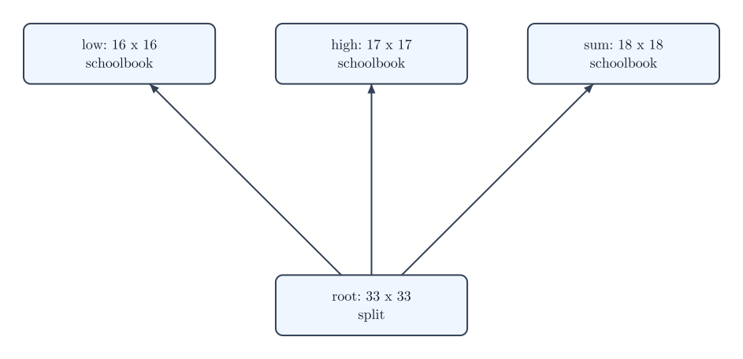
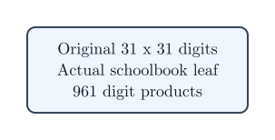
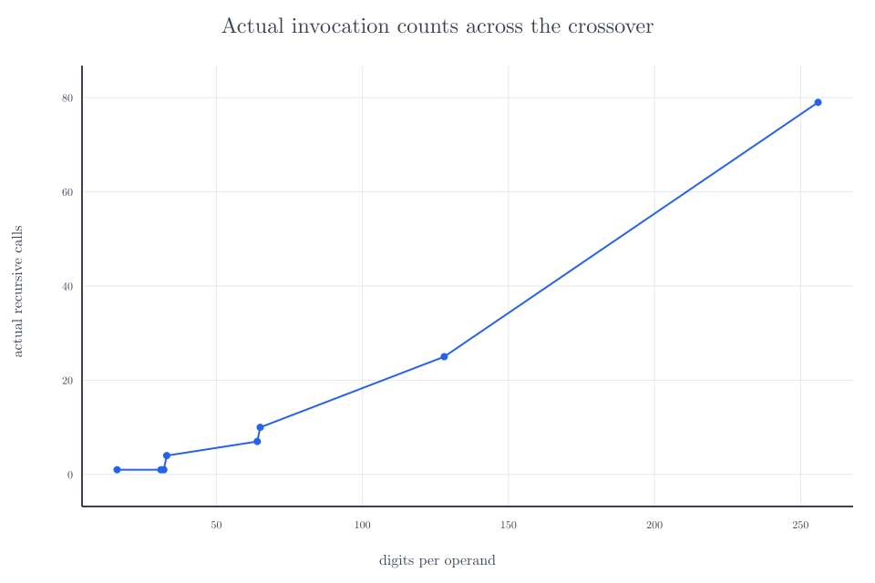
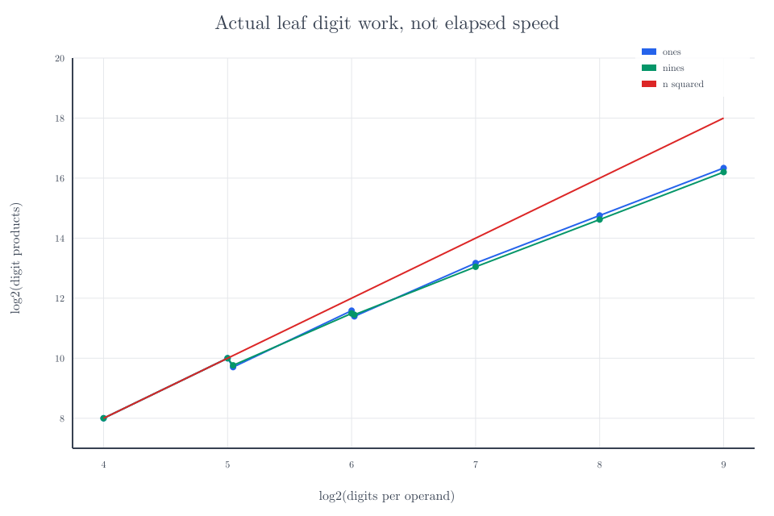

Karatsuba multiplication: inspect the three actual products
Abstract
Karatsuba replaces four half-products by three, but a practical implementation still uses schoolbook leaves. We start just above the native crossover, retain the original31-digit constants, and inspect actual recursive call roles, operand widths and result lengths. The original constants themselves use a schoolbook leaf, so theoretical power curves alone cannot describe that run. Native counters separate digit multiplications from omitted digit operations, allocations and timing.
Start just beyond the actual crossover
The implementation uses a schoolbook leaf whenever either operand has at most32 digits. Two33-digit all-nine values therefore give a genuine first split. The diagram uses the producing invocation records, with actual low/high/sum children and their digit widths. Recursive low slices can retain high zero positions; recorded widths describe actual vectors rather than inferred magnitudes.
#include <dm/dm.hpp>
int main() {
std::filesystem::create_directories("build");
const auto t =
dm::algorithms::karatsuba_trace(std::string(33, '9'),
std::string(33, '9'));
const char *roles[] = {"root", "low", "high", "sum"};
std::print("| actual call | role | depth | left digits | right digits | split | leaf | result digits " "|\n| ---: | --- | ---: | ---: | ---: | ---: | --- | ---: |\n");
dm::graphics::Diagram d;
for (std::size_t i = 0; i < t.calls.size(); ++i) {
const auto &c = t.calls[i];
std::print("| {} | {} | {} | {} | {} | {} | {} | {} |\n", i,
roles[int(c.role)], c.depth, c.left_digits, c.right_digits,
c.split, c.leaf, c.product_digits);
const double x = i ? 5. * (double(i) - 2) : 0, y = i ? 5 : 0;
d.node(std::to_string(i), {x, y},
std::format("{}: {} x {}\n{}", roles[int(c.role)], c.left_digits,
c.right_digits, c.leaf ? "schoolbook" : "split"));
if (i)
d.edge(std::to_string(c.parent), std::to_string(i));
}
std::print("\nActual digit products {}; full schoolbook formula33*33={}.\n",
t.work.digit_products, 33 * 33);
d.save_svg("build/karatsuba_split.svg");
}| actual call | role | depth | left digits | right digits | split | leaf | result digits |
|---|---|---|---|---|---|---|---|
| 0 | root | 0 | 33 | 33 | 16 | false | 66 |
| 1 | low | 1 | 16 | 16 | 0 | true | 32 |
| 2 | high | 1 | 17 | 17 | 0 | true | 34 |
| 3 | sum | 1 | 18 | 18 | 0 | true | 35 |
Actual digit products 869; full schoolbook formula33*33=1089.

Derive the three-product identity
Write x=x1 B+x0 and y=y1 B+y0, with B=10^m. Compute z0=x0 y0, z2=x1 y1 and zsum=(x0+x1)(y0+y1). Then
The subtracted middle term is nonnegative because it equals x0 y1+x1 y0. For balanced large operands, the three half-size calls plus linear digit additions give the familiar exponent log2(3). Actual crossover, carry growth, unequal lengths and temporary copies affect a concrete run. This kernel splits at half the smaller vector width, so balanced-rate intuition should not be substituted for measurements on severely unequal operands.
Retain the original constants and reveal their actual base case
The original strings are31 digits from pi and e. Both are below crossover32, so their native invocation is a schoolbook leaf. Commutativity and identity are useful controls but are not independent multiplication oracles. Independent batch checks additionally verified exact products with Python integers.
#include <dm/dm.hpp>
int main() {
std::filesystem::create_directories("build");
const std::string x =
"3141592653589793238462643383279", y =
"2718281828459045235360287471352";
const auto t = dm::algorithms::karatsuba_trace(x, y);
std::print("Original left: {}\n\nOriginal right: {}\n\nActual product: {}\n\n",
x, y, t.product);
std::print("| left digits | right digits | result digits | actual calls | actual leaves | digit " "products |\n| ---: | ---: | ---: | ---: | ---: | ---: |\n| {} | {} | {} | {} | {} | {} |\n",
x.size(), y.size(), t.product.size(), t.work.recursive_calls,
t.work.schoolbook_leaves, t.work.digit_products);
if (t.product != dm::algorithms::karatsuba_multiply(y, x) ||
x != dm::algorithms::karatsuba_multiply(x, "1") ||
t.calls.size() != 1 || !t.calls[0].leaf)
throw std::runtime_error("original controls");
dm::graphics::Diagram d;
d.node("call", {0, 0},
std::format("Original {} x {} digits\nActual schoolbook leaf\n{} digit products",
x.size(), y.size(), t.work.digit_products)).save_svg(
"build/karatsuba_original.svg");
}Original left: 3141592653589793238462643383279
Original right: 2718281828459045235360287471352
Actual product: 8539734222673567065463550869543126215972716558040325068323208
| left digits | right digits | result digits | actual calls | actual leaves | digit products |
|---|---|---|---|---|---|
| 31 | 31 | 61 | 1 | 1 | 961 |

Decimal domain, zero widths and complete admission
Unsigned ASCII digits are accepted, with leading zeros normalized at the root. Empty input retains the legacy zero convention. Signs, whitespace and nondecimal bytes now reject. Recursive slices preserve their producing widths, including padded zeros, so their actual leaf costs can exceed a magnitude-only estimate. Products are normalized decimal strings. A zero root has one stored digit and executes a real schoolbook leaf rather than a fabricated zero-work result.
#include <dm/dm.hpp>
int main() {
std::filesystem::create_directories("build");
std::print("| left input | right input | actual product | calls | leaves | digit products |\n| --- | " "--- | --- | ---: | ---: | ---: |\n");
for (const auto &inputs : std::vector<std::pair<std::string, std::string>>{
{"", "123"}, {"0", "999"}, {"00012", "0034"}, {"999", "999"}
}) {
const auto t =
dm::algorithms::karatsuba_trace(inputs.first, inputs.second);
std::print("| {} | {} | {} | {} | {} | {} |\n",
inputs.first.empty() ? "empty" : inputs.first, inputs.second,
t.product, t.work.recursive_calls, t.work.schoolbook_leaves,
t.work.digit_products);
}
bool invalid = false, capped = false;
try {
(void) dm::algorithms::karatsuba_multiply("-12", "34");
} catch (const std::invalid_argument &) {
invalid = true;
}
try {
(void) dm::algorithms::karatsuba_trace(std::string(33, '9'),
std::string(33, '9'), {0, 1, 0});
} catch (const std::length_error &) {
capped = true;
}
if (!invalid || !capped)
throw std::runtime_error("domain and actual-call quota");
std::print("\nA sign rejects; a one-call ceiling cannot admit the actual33-digit recursive children.\n");
std::vector<double> x, y;
for (std::size_t n : {16, 31, 32, 33, 64, 65, 128, 256}) {
const auto t =
dm::algorithms::karatsuba_trace(std::string(n, '9'),
std::string(n, '9'));
x.push_back(n);
y.push_back(t.work.recursive_calls);
}
auto p = dm::graphics::RPlot::create();
p.line(x, y, "", {37, 99, 235}, 2).points(x, y, "", {37, 99, 235}, 4).title(
"Actual invocation counts across the crossover").x_label(
"digits per operand").y_label("actual recursive calls").save_svg(
"build/karatsuba_controls.svg");
}| left input | right input | actual product | calls | leaves | digit products |
|---|---|---|---|---|---|
| empty | 123 | 0 | 1 | 1 | 3 |
| 0 | 999 | 0 | 1 | 1 | 3 |
| 00012 | 0034 | 408 | 1 | 1 | 4 |
| 999 | 999 | 998001 | 1 | 1 | 9 |
A sign rejects; a one-call ceiling cannot admit the actual33-digit recursive children.

Compare selected digit products with an explicit baseline formula
The native counters below count only actual schoolbook digit-pair multiplications. The n² column is the exact count that an ordinary n-by-n digit schoolbook loop would perform; it is a formula baseline, not a measured alternative implementation. All-one and all-nine operands have the same lengths, but sum-child carries can change the recursive call tree. Additions, subtractions, carries, shifts and copies are excluded, so a lower count does not establish elapsed speed.
#include <dm/dm.hpp>
int main() {
std::filesystem::create_directories("build");
std::vector<double> x, ones, nines, schoolbook;
std::print("| n | all-one calls | all-one digit products | all-nine calls | all-nine digit products | " "schoolbook formula |\n| ---: | ---: | ---: | ---: | ---: | ---: |\n");
for (std::size_t n : {16, 32, 33, 64, 65, 128, 256, 512}) {
const auto a =
dm::algorithms::karatsuba_trace(std::string(n, '1'),
std::string(n, '1'));
const auto b =
dm::algorithms::karatsuba_trace(std::string(n, '9'),
std::string(n, '9'));
std::print("| {} | {} | {} | {} | {} | {} |\n", n,
a.work.recursive_calls, a.work.digit_products,
b.work.recursive_calls, b.work.digit_products, n * n);
x.push_back(std::log2(n));
ones.push_back(std::log2(a.work.digit_products));
nines.push_back(std::log2(b.work.digit_products));
schoolbook.push_back(std::log2(n * n));
}
auto p = dm::graphics::RPlot::create();
p.line(x, ones, "ones", {37, 99, 235}, 2).points(x, ones, "", {37, 99, 235},
4).line(x, nines, "nines",
{5, 150, 105}, 2).points(x, nines, "", {5, 150, 105}, 4).line(x, schoolbook, "n squared", {220, 38, 38}, 2).title("Actual leaf digit work, not elapsed speed").x_label("log2(digits per operand)").y_label("log2(digit products)").y_limits(7, 20).save_svg("build/karatsuba_work.svg");
}| n | all-one calls | all-one digit products | all-nine calls | all-nine digit products | schoolbook formula |
|---|---|---|---|---|---|
| 16 | 1 | 256 | 1 | 256 | 256 |
| 32 | 1 | 1024 | 1 | 1024 | 1024 |
| 33 | 4 | 834 | 4 | 869 | 1089 |
| 64 | 4 | 3072 | 7 | 2882 | 4096 |
| 65 | 10 | 2692 | 10 | 2795 | 4225 |
| 128 | 13 | 9216 | 25 | 8456 | 16384 |
| 256 | 40 | 27648 | 79 | 25178 | 65536 |
| 512 | 124 | 82754 | 241 | 75344 | 262144 |

Complete syntax and original input-byte admission precede normalized copies. Trace defaults cap total original digits and actual recursive entries at one million each, with maximum admitted depth1024; zero disables the corresponding optional ceiling. Root depth is zero. Recursion limits are checked on entry after any argument temporaries have been formed, before that invocation's body. Thus they are not a peak-memory guarantee. Capacity, temporary vectors, byte overhead and RAM are excluded. Counter/shape arithmetic is checked, and failed calls expose no partial trace.
The scalar API owns only its result and per-call digit temporaries. Conservative live digit storage can grow with operand width times recursion depth for unequal sizes; trace adds one owned metadata record per actual invocation and complete original operands. No external dataset is appropriate for this exact decimal arithmetic example.
Independent Python integers verified 100 decimal products through
298-by-199-digit inputs; 1,921 actual recursion entries passed
parent/role/depth/crossover and leaf-work accounting checks. The same 100
products matched the frozen original kernel. Native tests include all two-digit
integer pairs, closed-form all-nine squares, powers of ten, complete ceilings
and ownership. The shared ten-report build passed 131 native tests, 38 directly
instrumented address/undefined-behaviour sanitizer tests, 89 compiled public
examples, documentation coverage for all 388 scoped definitions and ten
representative clangd hovers. All four complete C++ report programs executed
successfully and their native figures were visually reviewed. Batch receipts are
retained under build/mepml-conversion/batch-174-183/.
Reference
A. Karatsuba and Yu. Ofman (1962), Multiplication of many-digital numbers by automatic computers, Doklady Akademii Nauk SSSR145(2),293–294; English translation in Soviet Physics Doklady7(1963),595–596. The present decimal hybrid retains its implementation-specific crossover32 and actual carry behavior.